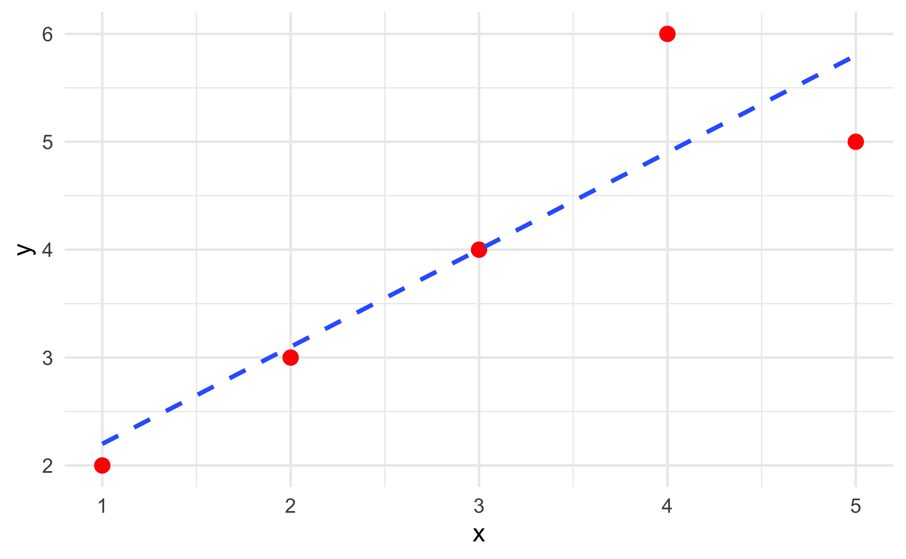
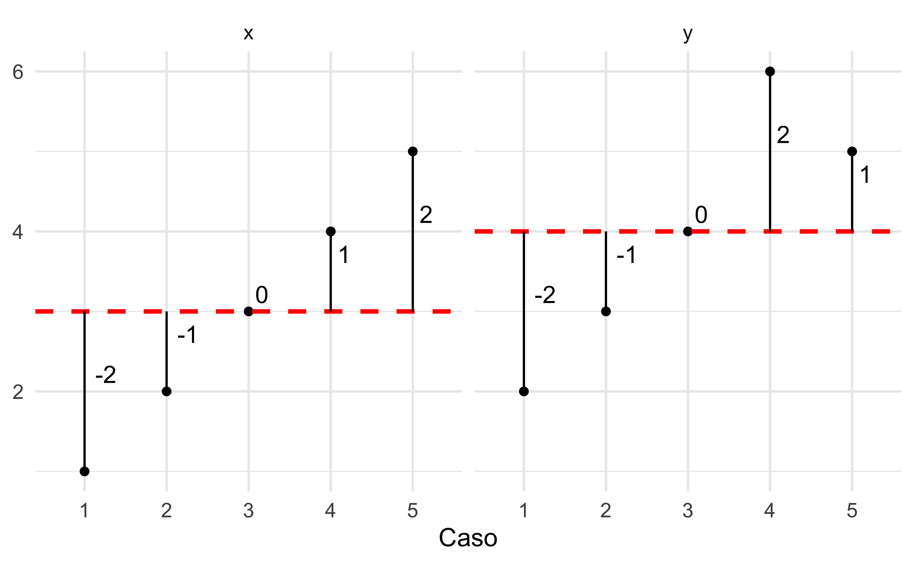
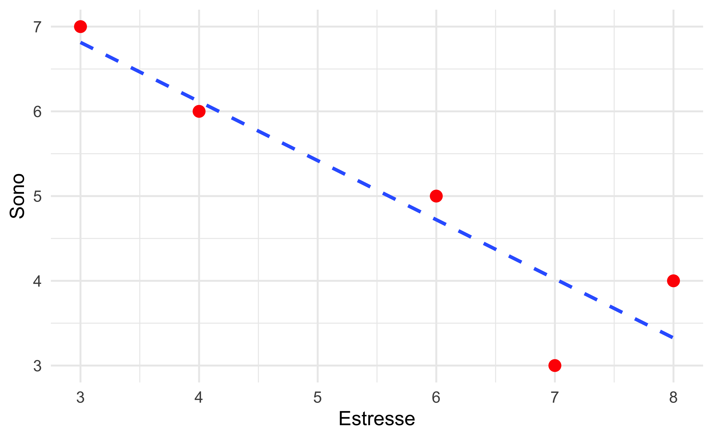

| Caso | x | y |
|---|---|---|
| 1 | 1 | 2 |
| 2 | 2 | 3 |
| 3 | 3 | 4 |
| 4 | 4 | 6 |
| 5 | 5 | 5 |
Modelos matemáticos
Covariância e correlação de Pearson
Covariância
\[ \text{cov}_{x,y} = \frac{\sum (x_i - \bar{x})(y_i - \bar{y})}{N - 1} \]
Onde,
- \(\sum\) = símbolo de somatório (soma de termos)
- \(x_i\) = valor observado da variável \(x\) no caso \(i\)
- \(y_i\) = valor observado da variável \(y\) no caso \(i\)
- \(\bar{x}\) = média dos valores de \(x\)
- \(\bar{y}\) = média dos valores de \(y\)
Exemplo
Gráfico de dispersão
Covariância
\[ \text{cov}_{x,y} = \frac{\sum (x_i - \bar{x})(y_i - \bar{y})}{N - 1} \]
\(x_i - \bar{x}\) e \(y_i - \bar{y}\) = desvios da média
Desvios da média
Cálculo
| x | y | \(x_i - \bar{x}\) | \(y_i - \bar{y}\) | \((x_i - \bar{x})(y_i - \bar{y})\) | |
|---|---|---|---|---|---|
| 1 | 2 | ||||
| 2 | 3 | ||||
| 3 | 4 | ||||
| 4 | 6 | ||||
| 5 | 5 | ||||
| Soma | |||||
| Média |
Resultado
Exercício
Você está conduzindo uma pesquisa com 5 participantes para investigar a relação entre nível de estresse e qualidade do sono. Os dados foram coletados por meio de escalas padronizadas:
- Estresse: pontuação de 1 a 10 (quanto maior, mais estressado)
- Qualidade do sono: pontuação de 1 a 10 (quanto maior, melhor sono)
Os dados abaixo representam os níveis de estresse e qualidade do sono coletados. Calcule a covariância entre as duas variáveis.
| Participante | Estresse | Sono |
|---|---|---|
| P1 | 8 | 4 |
| P2 | 6 | 5 |
| P3 | 7 | 3 |
| P4 | 4 | 6 |
| P5 | 3 | 7 |
Gráfico de dispersão
Cálculo
| Estresse | Sono | \(x_i - \bar{x}\) | \(y_i - \bar{y}\) | \((x_i - \bar{x})(y_i - \bar{y})\) | |
|---|---|---|---|---|---|
| 8 | 4 | ||||
| 6 | 5 | ||||
| 7 | 3 | ||||
| 4 | 6 | ||||
| 3 | 7 | ||||
| Soma | |||||
| Média |
Resposta
Correlação de Pearson a partir da covariância
\[ r = \frac{\text{Cov}(X, Y)}{\sigma_X \cdot \sigma_Y} \]
Onde,
- \(\text{Cov}(X, Y)\) = covariância entre \(X\) e \(Y\)
- \(\sigma_X, \sigma_Y\) = desvios padrão de \(X\) e \(Y\)
Cálculo
Cov = 2.25
| x | y | \((x_i - \bar{x})^2\) | \((y_i - \bar{y})^2\) | |
|---|---|---|---|---|
| 1 | 2 | |||
| 2 | 3 | |||
| 3 | 4 | |||
| 4 | 6 | |||
| 5 | 5 | |||
| Soma | ||||
| Média |
Resposta
Exercício
Com base na covariância obtida anteriormente, calcule o coeficiente de correlação de Pearson entre as variáveis Estresse e Qualidade do Sono.
Cáculo
Cov = -3
| Estresse | Sono | \((x_i - \bar{x})^2\) | \((y_i - \bar{y})^2\) | |
|---|---|---|---|---|
| 8 | 4 | |||
| 6 | 5 | |||
| 7 | 3 | |||
| 4 | 6 | |||
| 3 | 7 | |||
| Soma | ||||
| Média |
Resposta
Correlação de Pearson: fórmula expandida
\[ r = \frac{\sum_{i=1}^n (x_i - \bar{x})(y_i - \bar{y})} {\sqrt{\sum_{i=1}^n (x_i - \bar{x})^2 \;\sum_{i=1}^n (y_i - \bar{y})^2}} \]
Onde,
- \(\sum\) = símbolo de somatório (soma de termos)
- \(x_i\) = valor observado da variável \(x\) no caso \(i\)
- \(y_i\) = valor observado da variável \(y\) no caso \(i\)
- \(\bar{x}\) = média dos valores de \(x\)
- \(\bar{y}\) = média dos valores de \(y\)
- \(n\) = número total de casos (ou observações)
- \(\sum_{i=1}^n\) = soma dos termos do índice \(i = 1\) até \(i = n\)
Cálculo
| x | y | \(x_i - \bar{x}\) | \(y_i - \bar{y}\) | \((x_i - \bar{x})(y_i - \bar{y})\) | \((x_i - \bar{x})^2\) | \((y_i - \bar{y})^2\) | |
|---|---|---|---|---|---|---|---|
| 1 | 2 | ||||||
| 2 | 3 | ||||||
| 3 | 4 | ||||||
| 4 | 6 | ||||||
| 5 | 5 | ||||||
| Soma | |||||||
| Média |
Resposta
Exercício
Usando a fórmula expandida, calcule o coeficiente de correlação de Pearson entre as variáveis Estresse e Qualidade do Sono.
Cálculo
| Estresse | Sono | \(x_i - \bar{x}\) | \(y_i - \bar{y}\) | \((x_i - \bar{x})(y_i - \bar{y})\) | \((x_i - \bar{x})^2\) | \((y_i - \bar{y})^2\) | |
|---|---|---|---|---|---|---|---|
| 8 | 4 | ||||||
| 6 | 5 | ||||||
| 7 | 3 | ||||||
| 4 | 6 | ||||||
| 3 | 7 | ||||||
| Soma | |||||||
| Média |
Resposta
Significância: o teste t para a correlação de Pearson
Para determinar a significância do teste:
- Estabelecer um nível de significância (\(\alpha = 0.05\), por exemplo)
- Calcular os graus de liberdade para a correlação: n - 2
- Calcular o valor de t
- Encontrar o valor crítico (\(t_{crítico}\)):
- Numa tabela de distribuição t, encontra-se o valor que cruza os graus de liberdade com o nível de significância estabelecido para um teste bicaudal \(\frac{\alpha}{2} = 0.025\)
- Se o módulo do valor t calculado for maior o valor do \(t_{crítico}\), rejeita-se a hipótese nula
- \(|t_{calculado}|\) > \(t_{crítico}\) => Rejeitar \(H_{0}\)
Tabela de distribuição t
| cum.prob | t.50 | t.75 | t.80 | t.85 | t.90 | t.95 | t.975 | t.99 | t.995 | t.999 | t.9995 |
|---|---|---|---|---|---|---|---|---|---|---|---|
| one-tail | 0.50 | 0.25 | 0.20 | 0.15 | 0.10 | 0.05 | 0.025 | 0.01 | 0.005 | 0.001 | 0.0005 |
| two-tails | 1.00 | 0.50 | 0.40 | 0.30 | 0.20 | 0.10 | 0.05 | 0.02 | 0.01 | 0.002 | 0.001 |
| df | |||||||||||
| 1 | 0.000 | 1.000 | 1.376 | 1.963 | 3.078 | 6.314 | 12.71 | 31.82 | 63.66 | 318.31 | 636.62 |
| 2 | 0.000 | 0.816 | 1.061 | 1.386 | 1.886 | 2.920 | 4.303 | 6.965 | 9.925 | 22.327 | 31.599 |
| 3 | 0.000 | 0.765 | 0.978 | 1.250 | 1.638 | 2.353 | 3.182 | 4.541 | 5.841 | 10.215 | 12.924 |
| 4 | 0.000 | 0.741 | 0.941 | 1.190 | 1.533 | 2.132 | 2.776 | 3.747 | 4.604 | 7.173 | 8.610 |
| 5 | 0.000 | 0.727 | 0.920 | 1.156 | 1.476 | 2.015 | 2.571 | 3.365 | 4.032 | 5.893 | 6.869 |
| 6 | 0.000 | 0.718 | 0.906 | 1.134 | 1.440 | 1.943 | 2.447 | 3.143 | 3.707 | 5.208 | 5.959 |
| 7 | 0.000 | 0.711 | 0.896 | 1.119 | 1.415 | 1.895 | 2.365 | 2.998 | 3.499 | 4.785 | 5.408 |
| 8 | 0.000 | 0.706 | 0.889 | 1.108 | 1.397 | 1.860 | 2.306 | 2.896 | 3.355 | 4.501 | 5.041 |
| 9 | 0.000 | 0.703 | 0.883 | 1.100 | 1.383 | 1.833 | 2.262 | 2.821 | 3.250 | 4.297 | 4.781 |
| 10 | 0.000 | 0.700 | 0.879 | 1.093 | 1.372 | 1.812 | 2.228 | 2.764 | 3.169 | 4.144 | 4.587 |
Fórmula para o valor de t na correlação de Pearson
\[ t = \frac{r \sqrt{n - 2}}{\sqrt{1 - r^2}} \]
Onde,
- \(r\) = coeficiente de correlação de Pearson
- \(n\) = número de pares de dados (observações)
Cálculo do Valor de T e graus de liberdade da amostra de exemplo
- r = 0.9
- n = 5
Resposta
Valor crítico de t com \(\alpha\) de 0.05 em uma hipótese bilateral
| cum.prob | t.50 | t.75 | t.80 | t.85 | t.90 | t.95 | t.975 | t.99 | t.995 | t.999 | t.9995 |
|---|---|---|---|---|---|---|---|---|---|---|---|
| one-tail | 0.50 | 0.25 | 0.20 | 0.15 | 0.10 | 0.05 | 0.025 | 0.01 | 0.005 | 0.001 | 0.0005 |
| two-tails | 1.00 | 0.50 | 0.40 | 0.30 | 0.20 | 0.10 | 0.05 | 0.02 | 0.01 | 0.002 | 0.001 |
| df | |||||||||||
| 1 | 0.000 | 1.000 | 1.376 | 1.963 | 3.078 | 6.314 | 12.71 | 31.82 | 63.66 | 318.31 | 636.62 |
| 2 | 0.000 | 0.816 | 1.061 | 1.386 | 1.886 | 2.920 | 4.303 | 6.965 | 9.925 | 22.327 | 31.599 |
| 3 | 0.000 | 0.765 | 0.978 | 1.250 | 1.638 | 2.353 | 3.182 | 4.541 | 5.841 | 10.215 | 12.924 |
| 4 | 0.000 | 0.741 | 0.941 | 1.190 | 1.533 | 2.132 | 2.776 | 3.747 | 4.604 | 7.173 | 8.610 |
| 5 | 0.000 | 0.727 | 0.920 | 1.156 | 1.476 | 2.015 | 2.571 | 3.365 | 4.032 | 5.893 | 6.869 |
| 6 | 0.000 | 0.718 | 0.906 | 1.134 | 1.440 | 1.943 | 2.447 | 3.143 | 3.707 | 5.208 | 5.959 |
| 7 | 0.000 | 0.711 | 0.896 | 1.119 | 1.415 | 1.895 | 2.365 | 2.998 | 3.499 | 4.785 | 5.408 |
| 8 | 0.000 | 0.706 | 0.889 | 1.108 | 1.397 | 1.860 | 2.306 | 2.896 | 3.355 | 4.501 | 5.041 |
| 9 | 0.000 | 0.703 | 0.883 | 1.100 | 1.383 | 1.833 | 2.262 | 2.821 | 3.250 | 4.297 | 4.781 |
| 10 | 0.000 | 0.700 | 0.879 | 1.093 | 1.372 | 1.812 | 2.228 | 2.764 | 3.169 | 4.144 | 4.587 |
Resposta
| cum.prob | t.50 | t.75 | t.80 | t.85 | t.90 | t.95 | t.975 | t.99 | t.995 | t.999 | t.9995 |
|---|---|---|---|---|---|---|---|---|---|---|---|
| one-tail | 0.50 | 0.25 | 0.20 | 0.15 | 0.10 | 0.05 | 0.025 | 0.01 | 0.005 | 0.001 | 0.0005 |
| two-tails | 1.00 | 0.50 | 0.40 | 0.30 | 0.20 | 0.10 | 0.05 | 0.02 | 0.01 | 0.002 | 0.001 |
| df | |||||||||||
| 1 | 0.000 | 1.000 | 1.376 | 1.963 | 3.078 | 6.314 | 12.71 | 31.82 | 63.66 | 318.31 | 636.62 |
| 2 | 0.000 | 0.816 | 1.061 | 1.386 | 1.886 | 2.920 | 4.303 | 6.965 | 9.925 | 22.327 | 31.599 |
| 3 | 0.000 | 0.765 | 0.978 | 1.250 | 1.638 | 2.353 | 3.182 | 4.541 | 5.841 | 10.215 | 12.924 |
| 4 | 0.000 | 0.741 | 0.941 | 1.190 | 1.533 | 2.132 | 2.776 | 3.747 | 4.604 | 7.173 | 8.610 |
| 5 | 0.000 | 0.727 | 0.920 | 1.156 | 1.476 | 2.015 | 2.571 | 3.365 | 4.032 | 5.893 | 6.869 |
| 6 | 0.000 | 0.718 | 0.906 | 1.134 | 1.440 | 1.943 | 2.447 | 3.143 | 3.707 | 5.208 | 5.959 |
| 7 | 0.000 | 0.711 | 0.896 | 1.119 | 1.415 | 1.895 | 2.365 | 2.998 | 3.499 | 4.785 | 5.408 |
| 8 | 0.000 | 0.706 | 0.889 | 1.108 | 1.397 | 1.860 | 2.306 | 2.896 | 3.355 | 4.501 | 5.041 |
| 9 | 0.000 | 0.703 | 0.883 | 1.100 | 1.383 | 1.833 | 2.262 | 2.821 | 3.250 | 4.297 | 4.781 |
| 10 | 0.000 | 0.700 | 0.879 | 1.093 | 1.372 | 1.812 | 2.228 | 2.764 | 3.169 | 4.144 | 4.587 |
Resposta
Conclusão
- \(|t_{calculado}|\) = 3.5762374
- \(t_{crítico}\) = 3.1824463
- \(|t_{calculado}|\) > \(t_{crítico}\) => Rejeitar \(H_{0}\)
Portanto, rejeitamos a hipótese nula
Exercício
Com base no coeficiente de correlação de pearson obtido anteriormente, teste a hipótese pertinente variáveis Estresse e Qualidade do Sono.
- r = -0.915
- n = 5
Resposta
Conclusão
- \(|t_{calculado}|\) = -3.927922
- \(t_{crítico}\) = 3.1824463
- \(|t_{calculado}|\) > \(t_{crítico}\) => Rejeitar \(H_{0}\)
Portanto, rejeitamos a hipótese nula